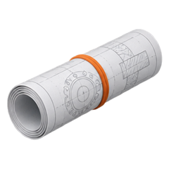

- Home
- SME Audit & Compliance
- Quality System Gap Assessment
Quality System Gap Assessment
Find the gaps between your current quality practices and what your customers require.

Many SMEs have quality documents but do not know whether they match what customers and applicable requirements actually expect.
- Manufacturing SMEs and MSMEs
- Suppliers to larger OEMs
- Companies preparing for a customer audit
What we provide
Everything included in scope
- Quality system review
- Quality documentation assessment
- Quality procedure review
- Quality records assessment
- Inspection process review
- Nonconformance management review
- Corrective-action system assessment
- Quality responsibility mapping
- Internal process control review
How we work
A clear process from the first call
Initial consultation
The company, its processes, customer expectations and concerns.
Assessment & evidence
Documents, records, processes and workplace practices reviewed.
Gap analysis
Nonconformities, weaknesses and opportunities against the agreed criteria.
Action plan
Findings prioritised, responsibilities and timelines recommended.
Implementation support
Documentation, corrective actions and process improvements.
Follow-up & review
Action closure checked and improvement evaluated.
Deliverables
What you receive
- Gap assessment checklist
- Observations and evidence
- Risk-prioritised findings
- Improvement recommendations
- Action plan
FAQ
Questions about this service
What is an SME quality system gap assessment?
A structured review of selected quality processes and records against agreed customer or applicable requirements. You receive evidence-based findings ranked by priority, together with an action plan.
Do you provide on-site assessments?
Yes. Most assessments include a site visit, agreed in advance and carried out under your safety, PPE and confidentiality rules. Some document reviews can be done remotely.
Related
You may also need

Manufacturing Process Audit
Evaluate how your processes actually run, and where they drift.
View service
Engineering Drawing & Document Control Assessment
Make sure the right drawing and document is always the one in use.
View serviceInspection, Measurement & Traceability Assessment
Make inspection consistent and material traceable from receipt to dispatch.
View serviceGet in touch
Talk to us about this service
Fees depend on scope, so we reply with a clear next step and a quotation where one is needed.
- Call+91 97252 04739
- WhatsApp+91 97252 04739